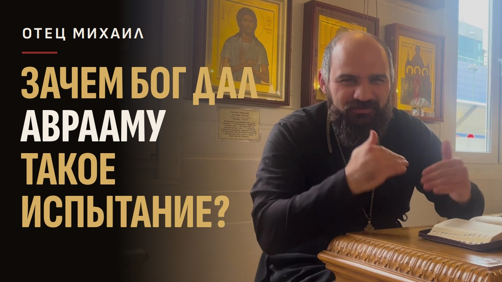

Скачайте видео и обложку
Видео - запись беседы целиком, около 40 минут, файл MP4 на 1,35 ГБ. Скачивание займёт несколько минут, дождитесь конца.
Скачать видео MP4, 1,35 ГБ Скачать обложку JPG, 1280×720

Загрузите видео на канал
- Откройте studio.youtube.com и войдите в аккаунт канала, где будет беседа.
- Справа вверху нажмите «Создать», затем «Добавить видео».
- Выберите скачанный файл видео. Пока он загружается, заполняйте поля по шагам ниже.
Название
Скопируйте и вставьте в поле «Название».
Для чего Бог дал Аврааму такое испытание - убить своего сына?
Описание
Скопируйте целиком и вставьте в поле «Описание». Тайм-коды внизу YouTube сам превратит в главы: зритель увидит разметку беседы прямо на полосе просмотра и сможет перейти к нужному месту.
Беседа иерея Михаила Дочия с прихожанами 8 ноября, в день памяти великомученика Димитрия. Главный вопрос вечера задали из зала: для чего Бог дал Аврааму такое испытание - убить своего долгожданного сына? Отец Михаил отвечает: невероятную боль может понять только тот, кто сам её пережил. Бог хотел, чтобы Авраам сроднился Ему, и чтобы у Бога был повод ответить взаимностью. Дальше - о принципе Божественной справедливости. Бог Сам установил законы этого мира и Сам их не нарушает, поэтому, чтобы действовать, Ему нужен повод. Главный такой повод - крестная жертва Христа. Как ответить на старый подковыристый вопрос «может ли Бог создать камень, который не сможет поднять» (у святого Иоанна Дамаскина: «Бог всё может, но не всё, что может, хочет»). И как каждый из нас даёт Богу повод действовать: когда терпит обиду ради Него и несёт свой крест. В начале - впечатления от постановки театра «Живая вода» о святой Елизавете Фёдоровне, домашнее задание (два стиха пророка Исайи наизусть) и упражнение «Бог, который...»: как держать Евангелие в сердце и просто рассказать о своей вере. В конце - святой Митрофан Серебрянский о том, что страданиям нужно дать смысл, и слова «кто не берёт креста и не идёт за Мной, тот не достоин Меня». Подписывайтесь на канал: здесь выходят беседы целиком и короткие ролики из них. Телеграм-канал отца Михаила: t.me/Ecclesiast_M 00:00 Молитва перед беседой 00:29 Постановка театра «Живая вода» о святой Елизавете Фёдоровне 04:00 Как отец Михаил открыл для себя духовный театр 05:11 Домашнее задание: учим Писание наизусть 06:37 Два стиха пророка Исайи: 7:14 и 5:20 09:13 Упражнение «Бог, который...» 11:20 Святитель Феофан о воспитании чувств 11:46 Как просто рассказать о своей вере 13:12 Короткое исповедание веры по святителю Феофану 14:44 Евангелие от Матфея, глава 8 15:35 Сотник и дисциплина римской армии 17:11 Георгий Победоносец и Димитрий: воины, которые пошли к Богу 17:53 Авраам, Сара и сын по имени «смех» 18:51 Для чего Бог дал Аврааму испытание - убить своего сына? 20:15 Боль понимает только тот, кто сам её пережил 22:00 Зачем Богу нужен повод? 23:36 Принцип Божественной справедливости 25:37 Адам и единственная заповедь 28:00 Может ли Бог создать камень, который не сможет поднять? 29:43 Главный повод: крестная жертва Христа 32:00 Повод в нашей жизни: терпеть обиду ради Бога 33:33 Подвиг святых и царская семья 34:20 Вопросы и комментарии слушателей 37:33 Святой Митрофан Серебрянский: страданиям нужен смысл 38:47 «Кто не берёт креста»: ответить Богу взаимностью 39:51 Молитва «Достойно есть» и домашнее задание #православие #вера #Евангелие #Авраам
Обложка и аудитория
- В разделе «Значок» нажмите «Загрузить файл» и выберите скачанную обложку.
- В разделе «Аудитория» отметьте «Нет, это видео не для детей».
Если кнопки «Загрузить файл» у значка нет, YouTube ещё не подтвердил канал. Откройте youtube.com/verify, введите номер телефона и код из СМС, затем вернитесь к видео.
Теги и язык
- Внизу страницы нажмите «Развернуть».
- В поле «Теги» вставьте строку ниже: YouTube сам разделит её по запятым.
- В поле «Язык видео» выберите «Русский».
православие, вера, беседа о вере, отец Михаил, иерей Михаил Дочия, Михаил Дочия, беседа со священником, Евангелие от Матфея, Авраам, испытание Авраама, Божественная справедливость, может ли Бог создать камень, Иоанн Дамаскин, Клайв Льюис, святитель Феофан, Елизавета Фёдоровна, театр Живая вода, Митрофан Серебрянский, Георгий Победоносец, сотник, пророк Исайя, крестная жертва, свой крест, Священное Писание
Опубликуйте
- Нажимайте «Далее», пока не откроется вкладка «Параметры доступа».
- Выберите «Открытый доступ». Если хотите сначала показать видео кому-то одному, выберите «Доступ по ссылке», а открыть для всех можно позже.
- Нажмите «Опубликовать».
Не выбирайте «Ограниченный доступ»: на такое видео не получится поставить ссылку из шортсов (об этом ниже).
Шортсы: ссылка на полную беседу
Под каждым коротким роликом можно поставить кликабельную ссылку на эту беседу. Она появляется рядом с названием канала. Зритель досмотрел шортс и одним нажатием переходит на всю беседу. Ссылки в описании и комментариях шортсов YouTube не открывает, работает только эта.
- Сначала выложите полную беседу (шаги выше). Ссылаться можно только на видео своего канала, с открытым доступом или доступом по ссылке.
- Выложите шортс как обычно, можно с телефона.
- Ссылку ставьте с компьютера: в приложении на телефоне этой кнопки нет.
Как поставить ссылку:
- Откройте studio.youtube.com.
- Слева нажмите «Контент».
- Нажмите на нужный шортс.
- Найдите поле «Видео по теме» и выберите в нём полную беседу.
- Нажмите «Сохранить».
Так же можно поставить ссылку на шортс, который уже выложен.
Если поля «Видео по теме» нет: Творческая студия, «Настройки», «Канал», «Доступность функций». Там должны быть включены «Продвинутые функции». YouTube открывает их сам, когда канал регулярно выкладывает видео, а раньше срока - после проверки по видео или по документу. Там же YouTube подскажет, как её пройти.
В описание шортса добавьте строку, хоть она и не нажимается:
Полная беседа - на канале